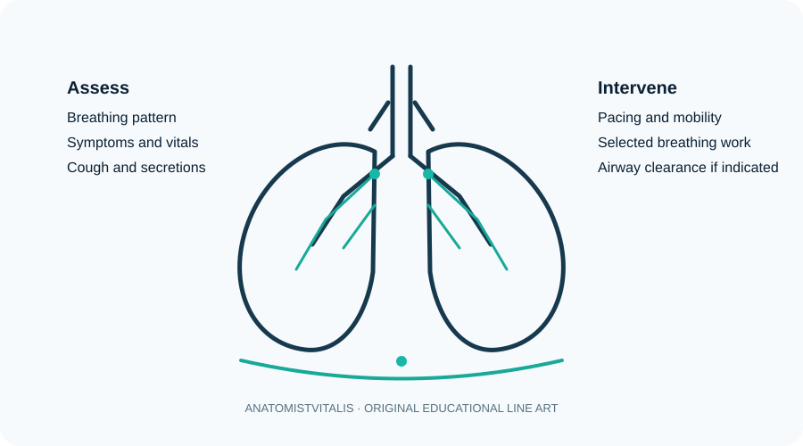

Cardiorespiratory physiotherapy: breathing, airway clearance and mobility
An introduction to respiratory assessment, breathing strategies, airway clearance and safe mobilisation.

Introduction
Cardiorespiratory physiotherapy supports breathing, secretion clearance, physical activity and functional recovery in people with respiratory or cardiovascular conditions. Intervention must be guided by assessment, diagnosis, clinical stability, local protocols and the person's response. Not every patient needs every airway-clearance or breathing technique.
Assessment essentials
Depending on the setting and professional scope, assessment may include symptoms, respiratory rate and pattern, oxygen saturation, cough and sputum, chest expansion, exercise tolerance, functional mobility, vital signs and relevant medical history. Interpret measurements in context and escalate concerning deterioration promptly.
Intervention categories
- Breathing control and pacing: may help selected patients manage breathlessness and coordinate activity.
- Airway clearance: techniques may be selected when retained secretions are a clinical problem, considering contraindications and patient preference.
- Early mobilisation: appropriately graded movement can reduce the consequences of immobility and support recovery.
- Exercise training: improve activity tolerance when clinically appropriate and sufficiently monitored.
- Education: explain symptom monitoring, pacing, positioning where relevant and agreed self-management strategies.
Monitoring and safety
Monitor the person's symptoms, work of breathing, colour, alertness, vital signs and oxygen saturation when indicated. Stop and escalate for severe or worsening breathlessness, chest pain, faintness, new confusion, cyanosis or other signs of instability. Oxygen targets and intervention thresholds depend on the individual's condition and clinical prescription.
Clinical connection
For a patient recovering from a respiratory illness, the plan may combine paced mobilisation, graded activity and education after checking clinical stability. Airway-clearance techniques should be selected for a clear indication rather than applied routinely to everyone.
Further study
Use this lesson as a foundation and consult current professional guidance, validated assessment resources and relevant research for clinical decisions. Clinical practice must follow local professional standards and individual patient needs.
Check your understanding
- Why should exertion be monitored during cardiorespiratory rehabilitation?
Reveal answer
Monitoring helps assess tolerance and response, identify deterioration early and guide safe adjustment of exercise intensity.
- What is the role of perceived exertion scales?
Reveal answer
They provide a structured way for the person to report how hard activity feels and can complement symptoms and physiological measurements.
- Why should exercise parameters be individualised?
Reveal answer
Diagnosis, baseline capacity, medications, symptoms, comorbidities, goals and risk differ between individuals.